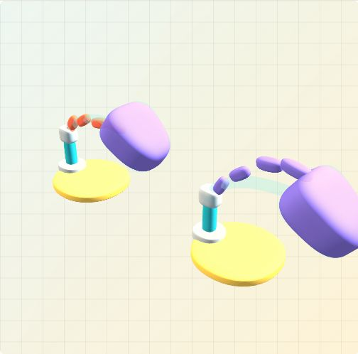

Interactive 3DThe Shape Doppelganger Problem
Surface fit is not editability. Two hand-specified 3D programs can reconstruct nearly the same object yet respond differently to the same part-level edit—an interactive counterexample for evaluating behavior after reconstruction.